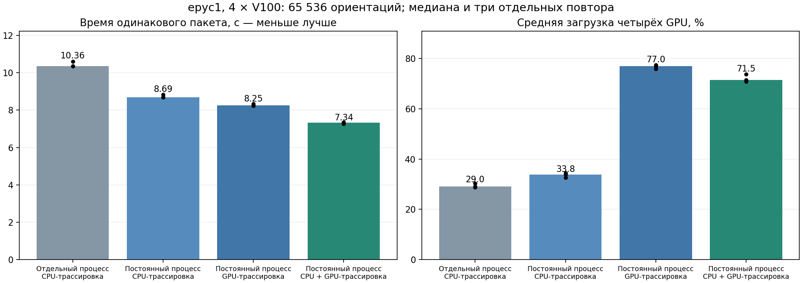

14 октября 2026. Экспериментальная ветка experiment/gpu-convex-resident-queue-20261014. Короткая методичка.
На рабочих сетках двух призм одинаковый пакет ускорился в 1,41 раза: 10,36 → 7,34 с. Средняя загрузка четырёх карт: 29,0 → 71,5%. Отдельная проверка полного диспетчера: 56 заданий, 12,59 → 7,23 с, 1,74 раза. Эти числа относятся к измеренным пакетам; полная адаптивная сходимость до 2% за них не измерялась.

Число независимых seeds, угловые веса, когерентное суммирование, интервалы ошибки и бюджет интерполяции EPS/4 не изменены. Кэш пучков — вычислительная оптимизация: он не заменяет усреднение и не уменьшает выборку.
Проверенный бинарник на epyc1:
/home/kirill_epyc/mbs-fast/experiments/fullauto-persistent-20261014/mbs_po_gpu_double
Минимальный пример нового расчёта призмы на четырёх картах; H и D — высота и диаметр призмы в мкм:
/home/kirill_epyc/mbs-fast/experiments/fullauto-persistent-20261014/mbs_po_gpu_double \ --method po --backend cuda --particle 1 446.7 147.1 \ --ri 1.3116 0 --wavelength-um 0.532 \ --fullauto 0.02 --fullauto-theta-range 170 180 \ --fullauto-gpus 0,1,2,3 --output /path/to/new-result --close
Постоянные процессы и выбор трассировки включены по умолчанию. Для воспроизведения фиксированного гибридного режима к этой команде добавляются:
--fullauto-workers persistent --fullauto-trace-backend hybrid \ --threads 16 --orientation-chunk 1024 --trace-cache-mib 256
Это ручная фиксация настроек для данного сервера; она исключает их автоподбор. Для двух независимых расчётов используются непересекающиеся списки --fullauto-gpus 0,1 и --fullauto-gpus 2,3, разные каталоги вывода и общий разумный бюджет CPU-потоков.
| Флаг | Действие |
|---|---|
| --fullauto-workers auto | Постоянные процессы для CUDA; отдельные процессы для CPU. persistent принудительно сохраняет процессы; process возвращает запуск отдельного процесса на каждый блок. |
| --fullauto-trace-backend auto | Проверить три пути на рабочей сетке. Поиск пропускается для малой начальной выборки N<1024, FP32 и режимов, где резидентная трассировка неприменима. Явные cpu, resident или hybrid фиксируют выбор. |
| --po-trace-backend cpu|resident|hybrid | Выбор для отдельного нативного запуска. Fullauto передаёт этот флаг работникам. Конфликт двух явно заданных backend отклоняется. hybrid включает конвейер автоматически. |
| --trace-cache-mib 256 | До 256 MiB отдельно для кэша CPU и для кэша GPU, на каждый рабочий процесс. Предел дополнительно уменьшается по доступной RAM и бюджету процесса. Это не предел всей памяти GPU: отдельно нужны рабочие буферы трассировки и дифракции. 0 отключает оба кэша. Для постоянных процессов значение по умолчанию — максимум 256, для одиночного запуска — 0. |
Постоянные процессы и CPU-кэш проверены для обычного PO, поглощения, некогерентного режима, невыпуклой геометрии и аналитических контролей. GPU-трассировка применяется к когерентному FP64 PO без поглощения для выпуклых частиц, которые укладываются в ограничения текущего трассировщика: до 16 граней, до 24 вершин пучка, n≤18. Неподдерживаемые режимы сохраняют CPU-подготовку. При переполнении GPU-блока весь блок пересчитывается прежним путём; частичные матрицы не принимаются.
Для произвольной формы выигрыш определяется её геометрией. Параметры симметрии эта оптимизация не меняет. Автопоиск не навязывает гибрид: в проверенном маленьком fullauto CPU занял 0,300 с, resident — 0,380 с, hybrid — 0,344 с; выбран CPU. На этом тесте ограничение двумя раундами оставило статус requires_further_sampling; достижение 2% не заявляется.
Сервер epyc1, четыре V100 16 GiB, EPYC 7702. На GPU 0–1: призма H=446,7, D=147,1 мкм, 292 θ × 8 φ. На GPU 2–3: H=501,2, D=155,8 мкм, 877 θ × 1 φ. Везде λ=0,532 мкм, m=1,3116, n=14, balanced cutoff. На каждой карте четыре задания по 4096 ориентаций; всего 65 536. Три повтора с разным порядком режимов; параметры и ориентации между режимами одинаковы.
| Режим | Медиана времени, с | Средняя загрузка GPU, % | Пиковая VRAM, MiB |
|---|---|---|---|
| Отдельный процесс CPU-трассировка | 10.358 | 29.0 | 587 |
| Постоянный процесс CPU-трассировка | 8.686 | 33.8 | 587 |
| Постоянный процесс GPU-трассировка | 8.252 | 77.0 | 3649 |
| Постоянный процесс CPU + GPU-трассировка | 7.338 | 71.5 | 4529 |
Загрузка измерена nvidia-smi с шагом 200 мс и усреднена по четырём картам за весь пакет. Гибрид быстрее чистой GPU-трассировки при несколько меньшем показании загрузки: главным критерием выбора остаётся время. 100% загрузки на каждом этапе не достигнуто.
В отдельной проверке полного диспетчера на маленькой призме одинаковая очередь содержала 56 нативных заданий: отдельные процессы создали 56 PID, постоянные — четыре PID. Время 12,59 → 7,23 с. Выборки и матрицы зафиксированы, временной автоподбор отключён.
Эти проверки устанавливают эквивалентность вычислительных путей на проверенных случаях. Они не являются новым сравнением PO с ADDA.
В fullauto_history.jsonl записываются GPU, PID, порядковый номер запроса процесса, seed, offset, N, n, парная глубина, θ, φ, блок CUDA, потоки, время внутри и вне вычисления. Выбор трассировки с временами и численными отклонениями хранится в trace_backend_calibration.json. Итоговая команда работников сохраняется в execution_tuning.tsv и снимках параметров.
Каждый каталог jobs содержит command.args, stdout.log, DAT и complete.txt после проверки. В stdout.log есть Persistent worker, Prepared trace reuse и GPU raw trace reuse. RAM/VRAM-кэш исчезает при завершении процесса; дисковые подтверждённые блоки остаются и достаточны для восстановления.
Для продолжения повторите исходную команду с тем же бинарником, аргументами и каталогом вывода либо используйте существующий scripts/replay_fullauto.py для этого каталога. Незавершённый блок будет пересчитан. Проверка хеша бинарника сохранена: предыдущая кампания продолжается своим замороженным бинарником. Испытания кратковременно останавливали выдачу новых заданий, затем исходные контроллеры 1878 и 1880 были продолжены.
Полные команды, матрицы, логи, измерения и бинарник: /home/user/BEM-CUDA/artifacts/fullauto_persistent_20261014/. Основная серия: final1, final2, final3; проверки: validation_cpu_v4b, validation_resident_v4b, validation_hybrid_tetra_v4, validation_controls_*, gpu_queue_v4_*, repository_queue_test. Сводные числа: JSON.
В новых запусках постоянный диспетчер сначала принимает ответы всех уже закончивших работников и выдаёт им следующие задания. Затем он подтверждает один результат на диске и выполняет подготовку очередного пакета. Перед подтверждением следующего результата он снова проверяет готовых работников. Раньше запись файлов и подготовка после первого ответа могли задерживать выдачу работы остальным свободным картам.
Одновременно на каждом работнике по-прежнему выполняется одно нативное задание. В очереди подтверждения хранится максимум 2 × число работников − 1 завершённых заданий: при четырёх работниках — семь. Это ссылки на сохранённые выходные файлы; все матрицы заранее в RAM не загружаются. Подтверждение complete.txt появляется после прежних проверок. Seed, смещение ориентаций, число ориентаций, θ, φ и порядок суммирования внутри каждого задания сохраняются. Однократный повтор после нехватки памяти сохранён.
Изменение действует автоматически при постоянных работниках и полезно контроллеру, который обслуживает несколько работников. Для расчёта с одним работником этот порядок выдачи остаётся прежним. Уже запущенные процессы не меняются.
| Проверка новой выдачи работы | Результат |
|---|---|
| Четыре процесса, 64 коротких задания с искусственными задержками записи/подготовки, пять чередующихся повторов | Медиана 0,6185 → 0,5854 с, ускорение 1,057×. Это проверка диспетчера с имитацией вычислительной работы. |
| Реальный фиксированный PO на CPU: четыре работника, 48 заданий, пять повторов каждого варианта | 2,5202 → 2,5191 с: измеримого ускорения на этой маленькой задаче нет. Все 16 элементов совпали точно. Ускорение полной GPU-кампании этим тестом не установлено. |
| Восстановление и ошибки | Повторный запуск не создал работников; после SIGKILL восемь подтверждённых блоков сохранились и итоговая матрица совпала точно. Нехватка памяти повторяется один раз, повторная ошибка завершает запуск; физическая ошибка не повторяется. |
Событие worker_dispatch_summary в fullauto_history.jsonl показывает число работников и заданий, наибольшее число одновременно готовых ответов (ready_batch_peak), пик очереди подтверждения (completed_pending_checkpoint_peak), время проверки и записи файлов (checkpoint_seconds) и время подготовки следующей работы контроллером (callback_seconds). Эти величины помогают отличить ожидание контроллера от времени оптического расчёта.
Воспроизводимые проверки: tests/test_worker_completion_dispatch.cpp, tests/benchmark_worker_completion_dispatch.cpp, tests/test_fullauto_persistent_queue.py и tests/test_worker_memory_retry.py. Измерения этой проверки: /home/user/BEM-CUDA/artifacts/fullauto_next_run_20261020/worker_dispatch/.